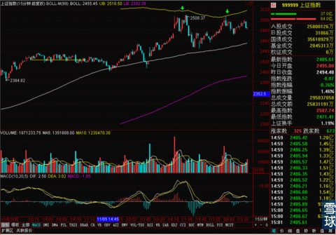
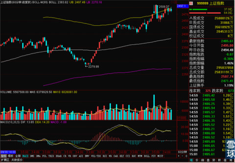
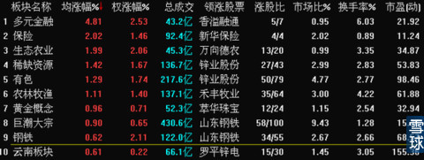
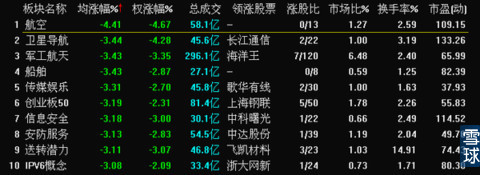

不仅仅是15分钟线出现了比较明显的压力，60分钟线上MACD也出来缠绕和顶背离态势，如果最近没有比较重磅的消息刺激的话，那么周末之前可能都是调整态势。

但是今天的调整没有预想中的剧烈，关键是权重比较大的保险类股票还是有色以及钢铁板块走势还不错，对上证指数产生了一定的支撑效果。值得注意的是周一只有少数权重大涨，在指数明显上涨的过程中，前期强势的热点股票全部回调，但是在昨天的大盘下跌中，这么强势的股票又诡异上涨，今天再次下跌。简单推测一下，很可能是市场主力在利用这几天的震荡以及指数和前期热点之间的相背进行调仓换股，前期强势热点很有可能在本周震荡之后在下周开始大幅调整一段时间。


但是这不意味这如果之后有牛市的话，以航天军工为代表的前期强势热点就不会再有突出表现，但是在未来的一段时间里，这些股票可能需要休息一段时间，主力暂时出货获利之后重新分配筹码之后才能再快速上涨。
而且之前我就说过，暴涨之后的震荡期往往是调仓换股的时间段，这个时间段也是寻找下一段行情中强势热点最好的机会。前两次暴涨之后的震荡并没有完全切换板块，但是目前来看今天有色和钢铁以及部分煤炭股有要进行接棒下一段行情的特征，所以今天资源B和商品B出乎我意料的大涨。

同时大涨的情况下，成交量还不是特别大，日线形态也不错。虽然现在还不能断言说这一次绝对是热门板块的切换，不过这两只分级基金和有色等资源板块非常值得我们在这周剩下的交易日里密切注视。因为大盘毕竟不能单靠几个板块一直上涨来拉动，板块明显的轮动起来是早晚的事情。